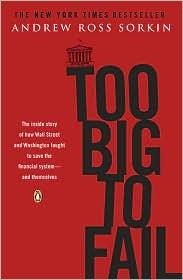

安德鲁·罗斯·索尔金（Andrew Ross Sorkin）是《纽约时报》财经首席记者，CNBC节目主持人，也是全球最重要的企业并购报道专栏"DealBook"的创始人。2009年，他出版了《大而不倒》——这是一部关于2008年金融危机核心七十二小时的即时历史。索尔金在长达数年的采访过程中，接触了超过二百名事件亲历者，包括时任财政部长汉克·保尔森（Hank Paulson）、美联储主席本·伯南克（Ben Bernanke）、纽约联储主席蒂莫西·盖特纳（Timothy Geithner），以及雷曼兄弟、美林证券、摩根大通、高盛等机构的最高管理层。本书以分钟级的叙事精度还原了这场几乎摧毁全球金融体系的危机全程。
全书采用近乎戏剧性的场景还原方式，以时间顺序重建了2008年9月雷曼兄弟倒闭前后数周内的决策链条。读者得以近距离观察保尔森如何在周末里试图撮合私人收购、为何最终放弃救助雷曼，以及贝尔斯登被迫出售给摩根大通、美国国际集团（AIG）接受政府救助的内幕谈判。索尔金刻意呈现了决策者在信息极度不完整、时间极度紧迫条件下的真实状态——他们并非全能的掌控者，而是一群在黑暗中摸索、相互猜疑、背负着政治压力和道德困境的普通人。
本书对"大而不倒"这一政策悖论的呈现尤为深刻。某些金融机构规模之大、关联之广，使得政府在面临其潜在倒闭时，实际上被剥夺了让市场自行出清的选项——救助它们意味着道德风险，不救则意味着系统性崩溃。这一困境在2008年以前仅停留于学术讨论层面，危机将其推向了现实政策的前台，并直接催生了此后《多德-弗兰克法案》的立法。本书的价值在于，它提供了理解这一政策选择背后真实逻辑所需要的情境深度。
《大而不倒》出版后荣获2010年杰拉尔德·勒布商业书籍奖，入围英国山缪·约翰逊奖。《金融时报》称其为"一部非凡的成就，将很难被超越作为金融危机最权威记录的地位"（an extraordinary achievement that will be hard to surpass as the definitive account）。汤姆·沃尔夫则将其描述为"一部迷人的逐幕传奇"（a fascinating, scene-by-scene saga）。对于任何希望理解2008年危机的真实运作机制、理解金融监管政策的现实局限，以及理解危机时刻人性与制度之间张力的读者，《大而不倒》是无可替代的第一手历史文献。